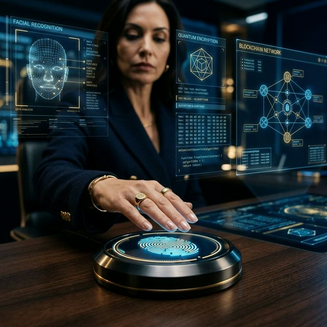

Passwords are obsolete. What is the future of secure authentication for HNWIs?
From multi-modal biometrics to quantum-resistant cryptography — the layered fortress protecting elite wealth in 2026 and beyond.

When wealth is the target, the authentication layer is the last line of defence between a portfolio and oblivion.
Imagine a world where your wealth is guarded not just by vaults, but by the very essence of your identity — your face, your voice, your digital fingerprint. For High Net Worth Individuals (HNWIs), this isn't a distant sci-fi fantasy; it's the frontier of secure authentication that blends cutting-edge technology with the timeless need for privacy and trust. 🌐🔐
The First Wave: Advanced Biometrics
Facial recognition, voice biometrics, and fingerprint scanning are already commonplace in consumer banking — but for ultra-high-net-worth clients, the stakes demand finer granularity and far greater resilience:
- Multi-modal biometrics: Combining several physiological traits — face and voice and fingerprint — in a single, seamless login creates a layered identity check that is exponentially harder to spoof than any single factor.
- Deepfake detection: Leading authentication platforms can now detect synthetic media with near-instant precision, flagging counterfeit masks or AI-generated voice clones before a fraudster gains access. 🚀
- Behavioural biometrics: Keystroke dynamics, mouse movement patterns, scrolling rhythm, and even how a user holds their phone become a continuous, invisible verification layer. These behavioural signatures are unique to each individual, learned over time, and flag anomalies that may indicate an account takeover — all without interrupting the user experience. 🖱️
The Full Security Stack: Layers Working in Harmony
Biometrics alone are not the final answer. For HNWIs — whose accounts and portfolios can represent decades of accumulated wealth — the next generation of security weaves together multiple strands simultaneously:
- Multi-Factor Authentication (MFA): Fusing passwords, hardware tokens, and one-time codes ensures that even a stolen credential provides no access without a physical second factor.
- AI & Machine Learning threat detection: Models sift through behavioural data in real time, learning what "normal" looks like for each individual user, and triggering immediate alerts when something deviates from that baseline. 🧠
- Quantum-resistant cryptography: Post-quantum algorithms pre-emptively defend against the next leap in computing power. Sophisticated adversaries are already harvesting encrypted data today, planning to decrypt it once quantum machines mature — a threat known as "harvest now, decrypt later." Deploying quantum-safe protocols now closes this window. 🔮
- Secure physical tokens: Smart-cards and hardware USB security keys (like YubiKeys) provide a tactile, offline barrier that cannot be phished or replicated remotely.
- Blockchain-based identity management: Decentralised identity frameworks remove the single point of failure inherent in centralised identity stores, making it nearly impossible for a single breach to compromise an entire portfolio. 🛡️💡
The Human Element: Technology Is Only as Strong as Its Guardians
No stack of technology is impenetrable if the people using it are uninformed. HNWIs must treat security awareness as a permanent discipline:
- Understand the threat landscape: Phishing, spear-phishing, SIM-swapping, and social engineering attacks are specifically refined to target high-value individuals. Awareness is the first defence.
- Partner proactively: Regular collaboration with financial institutions, specialised cybersecurity firms, and independent auditors ensures defences remain tailored to your evolving risk profile — not your neighbour's.
- Build a culture of vigilance: Security is a permanent partnership, not a one-time upgrade. Threat landscapes evolve; so must the defences that protect against them. 💬
What steps are you taking today to future-proof the security of your digital assets?